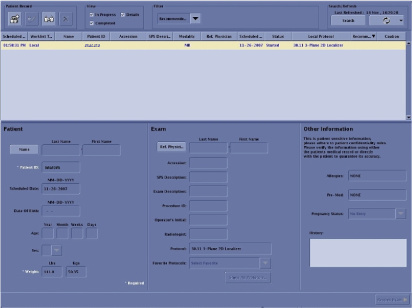
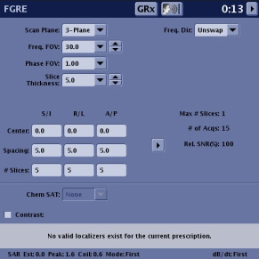
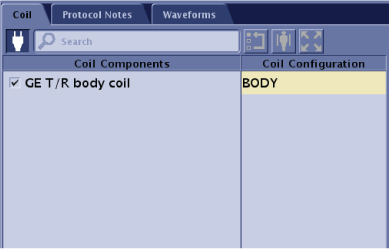
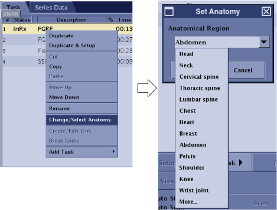

A check scan is done at the conclusion of many procedures. This functional check assures the unit is in good clinical working order.
Prerequisites
Personnel requirements
Required persons
Preliminary requirements
Procedure
Finalization
1
-
15 minutes
-
Tools and test equipment
Item
Quantity
Part number
Manufacturer
DQA III Phantom
1
2321556
-
DQA Phantom Positioner
1
5554497
-
Safety
Before working in any GE Healthcare MR suite or performing any GE Healthcare service procedure, you must:
Have read and understood all hazard conditions and safety requirements in the latest revision of the GE Healthcare MR Service Safety Manual (P/N 5452735).
Have successfully completed all relevant GE Healthcare Environmental Health and Safety (EHS) courses (or for non-GE employees, equivalent workplace training courses).
Comply with all site-specific training and workplace safety requirements.
If you have any safety concerns at any time, do not begin work or immediately stop work and move to a safe location. Immediately contact your supervisor or site safety officer for instructions on how to proceed.
About this task
Make sure that you use the DQA Phantom, so that the image can be analyzed for correct orientation.
Notice
Depending on site configuration and/or rules, you may want to temporarily disable Auto Archive or Auto Network.
Procedure
Follow the steps below to place the DQA III phantom on the table.
Figure 1. Phantom positioning on table
Note: This image is a representative example. Actual systems may vary.
Place the phantom positioner onto the hollow for HNU. R/L direction will be fit to the hollow.
Push the phantom positioner toward the magnet until the two bottom bars reach the end of the hollow.
Place the phantom onto the positioner and verify it is level and not rotated.
Landmark on the center line of the phantom. The laser must be in the middle of the line. Press Advance to Scan.
Click the New Worklist icon.
Figure 2. New worklist icon
Select a Patient ID workflow (other than geservice).
Figure 3. Entering a new work list

Enter for weight: 111.
Click Show All Protocols....
When the Protocol Selector menu opens, click Protocol Details.
Select the Protocol Library: GE.
Figure 4. Setting protocols
Select Adult.
Click the Template tab.
Select 3 - Plane 2D Localizer and click the arrow to move the selection to the box on the right.
Figure 5. Protocol selected
Click Accept.
Click Save.
Click Start Exam.
Enter the following image parameters.
Figure 6. Image parameters

OptionDescription
Frequency field of view (FOV) (Freq. FOV)
30.0
Phase FOV
1.00
Slice Thickness
5.0
Select Body Coil.
Figure 7. Coil selection

Click Task and select Change/Select Anatomy.
Select Anatomical Region (Any).
Click Accept.
Figure 8. Anatomical region

Click Save RX.
Click Scan.
Review the images to confirm that the orientation is correct.

 Note: This image is a representative example. Actual systems may vary.
Note: This image is a representative example. Actual systems may vary.